Last updated: 2025-07-14
Checks: 7 0
Knit directory: FDA_reading/
This reproducible R Markdown analysis was created with workflowr (version 1.7.1). The Checks tab describes the reproducibility checks that were applied when the results were created. The Past versions tab lists the development history.
Great! Since the R Markdown file has been committed to the Git repository, you know the exact version of the code that produced these results.
Great job! The global environment was empty. Objects defined in the global environment can affect the analysis in your R Markdown file in unknown ways. For reproduciblity it’s best to always run the code in an empty environment.
The command set.seed(20250713) was run prior to running
the code in the R Markdown file. Setting a seed ensures that any results
that rely on randomness, e.g. subsampling or permutations, are
reproducible.
Great job! Recording the operating system, R version, and package versions is critical for reproducibility.
Nice! There were no cached chunks for this analysis, so you can be confident that you successfully produced the results during this run.
Great job! Using relative paths to the files within your workflowr project makes it easier to run your code on other machines.
Great! You are using Git for version control. Tracking code development and connecting the code version to the results is critical for reproducibility.
The results in this page were generated with repository version 3f52d52. See the Past versions tab to see a history of the changes made to the R Markdown and HTML files.
Note that you need to be careful to ensure that all relevant files for
the analysis have been committed to Git prior to generating the results
(you can use wflow_publish or
wflow_git_commit). workflowr only checks the R Markdown
file, but you know if there are other scripts or data files that it
depends on. Below is the status of the Git repository when the results
were generated:
Ignored files:
Ignored: .DS_Store
Unstaged changes:
Modified: analysis/_site.yml
Modified: analysis/index.Rmd
Note that any generated files, e.g. HTML, png, CSS, etc., are not included in this status report because it is ok for generated content to have uncommitted changes.
These are the previous versions of the repository in which changes were
made to the R Markdown (analysis/chapter4.rmd) and HTML
(docs/chapter4.html) files. If you’ve configured a remote
Git repository (see ?wflow_git_remote), click on the
hyperlinks in the table below to view the files as they were in that
past version.
| File | Version | Author | Date | Message |
|---|---|---|---|---|
| html | 3f52d52 | Ziang Zhang | 2025-07-14 | Build site. |
| Rmd | 270346d | Ziang Zhang | 2025-07-14 | workflowr::wflow_publish("analysis/chapter4.rmd") |
The main content of this chapter includes:
Linear Smoother
Bias-Variance Trade-off
Uncertainty Quantification
Localized Least Squares
To motivate the concept of linear smoother, the author starts with the simple least squares problem:
Assume
\[ y_i = x(t_i) + \epsilon_i, \]
where \[ \epsilon_i \overset{iid}\sim \mathcal{N}(0, \sigma^2), \quad x(t) = \sum_{k=1}^K c_k \phi_k(t) = \boldsymbol{c}'\boldsymbol{\phi}(t). \]
The ordinary least squares approach considers the cost (or loss) function for each observation \((y_i, t_i)\):
\[ l(\boldsymbol{c} \mid y_i) = \left(y_i - \sum_{k=1}^K c_k \phi_k(t_i)\right)^2, \]
which implies the overall loss function can be written as:
\[ \begin{aligned} l(\boldsymbol{c} \mid \boldsymbol{y}) &= \sum_{i=1}^n \left(y_i - \sum_{k=1}^K c_k \phi_k(t_i)\right)^2 \\ &= \sum_{i=1}^n \left(y_i - \boldsymbol{c}'\boldsymbol{\phi}(t_i)\right)^2 \\ &= (\boldsymbol{y} - \boldsymbol{\Phi} \boldsymbol{c})'(\boldsymbol{y} - \boldsymbol{\Phi} \boldsymbol{c}) \\ &= \|\boldsymbol{y} - \boldsymbol{\Phi} \boldsymbol{c}\|^2, \end{aligned} \]
where \(\boldsymbol{\Phi}\) is the design matrix with \(n\) rows and \(K\) columns, and \(\boldsymbol{\phi}(t_i) = [\boldsymbol{\phi}_1(t_i), ..., \boldsymbol{\phi}_K(t_i)]\) is the \(i\)-th row of \(\boldsymbol{\Phi}\).
Therefore, the least square estimate of the coefficient vector \(\boldsymbol{c}\) is given by: \[\hat{\boldsymbol{c}} = (\boldsymbol{\Phi}'\boldsymbol{\Phi})^{-1}\boldsymbol{\Phi}'\boldsymbol{y}.\]
The fitted values \(\hat{\boldsymbol{y}}\) is: \[ \hat{\boldsymbol{y}} = \hat{\boldsymbol{x}}(\boldsymbol{t}) = \boldsymbol{\Phi}\hat{\boldsymbol{c}} = \underbrace{\boldsymbol{\Phi}(\boldsymbol{\Phi}'\boldsymbol{\Phi})^{-1}\boldsymbol{\Phi}'}_{\mathbf{S}}\,\boldsymbol{y}. \]
The matrix \(\mathbf{S}\) is called the smoothing matrix or hat matrix. It maps the observed data \(\boldsymbol{y}\) to the fitted/smoothed values \(\hat{\boldsymbol{y}} = \hat{\boldsymbol{x}}(\boldsymbol{t})\).
When the error terms \(\epsilon_i\) have more complex variance structure, the least squares estimate can be generalized to weighted least squares: \[ \hat{\boldsymbol{c}} = (\boldsymbol{\Phi}'\mathbf{W}\boldsymbol{\Phi})^{-1}\boldsymbol{\Phi}'\mathbf{W}\boldsymbol{y}, \]
where \(\mathbf{W}\) is a diagonal matrix with weights \(w_i\) on the diagonal, and the fitted values are given by: \[ \hat{\boldsymbol{y}} = \boldsymbol{\Phi}(\boldsymbol{\Phi}'\mathbf{W}\boldsymbol{\Phi})^{-1}\boldsymbol{\Phi}'\mathbf{W}\boldsymbol{y} = \mathbf{S}\boldsymbol{y}. \]
The smoothing matrix \(\mathbf{S}\) now becomes: \[ \mathbf{S} = \boldsymbol{\Phi}(\boldsymbol{\Phi}'\mathbf{W}\boldsymbol{\Phi})^{-1}\boldsymbol{\Phi}'\mathbf{W}. \]
The OLS and WLS results generalize naturally to a broader class of
linear smoothers.
A linear smoother is defined as a mapping from the
observed data \(\boldsymbol{y}\) to the
fitted values \(\hat{\boldsymbol{y}}\)
that can be expressed in the form:
\[ \hat{\boldsymbol{y}} = \hat{\boldsymbol{x}}(\boldsymbol{t}) = \mathbf{S}\boldsymbol{y}, \]
for some matrix \(\mathbf{S}\) that does not depend on \(\boldsymbol{y}\).
The smoother is linear because each fitted value \(\hat{x}(t_i)\) is a linear combination of the observed data \(\boldsymbol{y}\).
For example, the simple interpolation smoother given by \(\hat{x}(t_i) = y_i\) is a linear smoother with \(\mathbf{S} = \mathbf{I}\), where \(\mathbf{I}\) is the identity matrix.
Similarly, the sample mean smoother given by \(\hat{x}(t_i) = \bar{y}\) is also a linear smoother with \(\mathbf{S} = \frac{1}{n}\mathbf{1}\mathbf{1}'\), where \(\mathbf{1}\) is a vector of ones.
Many widely used smoothers are linear, because their:
theoretical properties such as bias and variance are easier to analyze.
computation is often efficient, especially when \(\mathbf{S}\) is sparse.
In the OLS example, the dimension of \(\boldsymbol{c}\) is \(K\), which is the number of basis
functions.
As we increase \(K\), the fitted values
\(\hat{\boldsymbol{y}}\) become more
flexible, but the model may also overfit the data.
On the other hand, if \(K\) is too
small, the model becomes simpler, but may not capture the underlying
structure of the data.
For more complex linear smoothers, the effective degrees of
freedom (EDF) is a useful concept to quantify the flexibility
of the smoother.
The effective degrees of freedom is defined as the trace of the
smoothing matrix \(\mathbf{S}\):
\[ \textit{df} = \operatorname{tr}(\mathbf{S}) = \sum_{i=1}^n S_{ii}, \]
where \(S_{ii}\) is the \(i\)-th diagonal element of \(\mathbf{S}\).
Intuitively, the trace measures the total influence each observation has
on its own fitted value.
Example 1: Ordinary Least Squares
If \(\mathbf{S} = \boldsymbol{\Phi}(\boldsymbol{\Phi}'\boldsymbol{\Phi})^{-1}\boldsymbol{\Phi}'\), then
\[ \textit{df} = \operatorname{tr}\bigl(\boldsymbol{\Phi}(\boldsymbol{\Phi}'\boldsymbol{\Phi})^{-1}\boldsymbol{\Phi}'\bigr) = \operatorname{tr}\bigl((\boldsymbol{\Phi}'\boldsymbol{\Phi})^{-1}\boldsymbol{\Phi}'\boldsymbol{\Phi}\bigr) = \operatorname{tr}(\mathbf{I}_{K\times K}) = K, \]
where \(K\) is the number of basis functions.
Example 2: Weighted Least Squares
If \(\mathbf{S} = \boldsymbol{\Phi}(\boldsymbol{\Phi}'\mathbf{W}\boldsymbol{\Phi})^{-1}\boldsymbol{\Phi}'\mathbf{W}\), then
\[ \textit{df} = \operatorname{tr}\bigl(\boldsymbol{\Phi}(\boldsymbol{\Phi}'\mathbf{W}\boldsymbol{\Phi})^{-1}\boldsymbol{\Phi}'\mathbf{W}\bigr) = \operatorname{tr}\bigl((\boldsymbol{\Phi}'\mathbf{W}\boldsymbol{\Phi})^{-1}\boldsymbol{\Phi}'\mathbf{W}\boldsymbol{\Phi}\bigr) = \operatorname{tr}(\mathbf{I}_{K\times K}) = K, \]
where \(K\) is the number of basis functions.
Example 3: Interpolation
If \(\mathbf{S} = \mathbf{I}_{n\times n}\), then
\[ \textit{df} = \operatorname{tr}(\mathbf{I}_{n\times n}) = n, \]
where \(n\) is the number of observations.
Example 4: Sample Mean
If \(\mathbf{S} = \frac{1}{n}\mathbf{1}\mathbf{1}'\), then
\[ \textit{df} = \operatorname{tr}\left(\frac{1}{n}\mathbf{1}\mathbf{1}'\right) = \frac{1}{n} \operatorname{tr}(\mathbf{1}\mathbf{1}') = \frac{1}{n} n = 1, \]
where \(\mathbf{1}\) is the vector of ones of length \(n\).
Recall that the mean squared error (MSE) at a point \(t\) can be decomposed into bias and variance terms.
We start with the definition:
\[ \operatorname{MSE}(\hat{x}(t)) = \mathbb{E}\bigl[(\hat{x}(t) - x(t))^2\bigr]. \]
We can add and subtract the expected value \(\mathbb{E}[\hat{x}(t)]\) inside the squared term:
\[ = \mathbb{E}\bigl[(\hat{x}(t) - \mathbb{E}[\hat{x}(t)] + \mathbb{E}[\hat{x}(t)] - x(t))^2\bigr]. \]
Expanding the square:
\[ = \mathbb{E}\bigl[(\hat{x}(t) - \mathbb{E}[\hat{x}(t)])^2 \bigr] + 2\,\mathbb{E}\bigl[(\hat{x}(t) - \mathbb{E}[\hat{x}(t)])(\mathbb{E}[\hat{x}(t)] - x(t))\bigr] + (\mathbb{E}[\hat{x}(t)] - x(t))^2. \]
Note that the cross-term is zero because:
\[ \mathbb{E}\bigl[\hat{x}(t) - \mathbb{E}[\hat{x}(t)]\bigr] = 0. \]
Therefore, the decomposition simplifies to:
\[ = \underbrace{\mathbb{E}\bigl[(\hat{x}(t) - \mathbb{E}[\hat{x}(t)])^2\bigr]}_{\operatorname{Var}(\hat{x}(t))} + \underbrace{(\mathbb{E}[\hat{x}(t)] - x(t))^2}_{\operatorname{Bias}(\hat{x}(t))^2}. \]
This gives the bias-variance trade-off formula:
\[ \operatorname{MSE}(\hat{x}(t)) = \operatorname{Var}(\hat{x}(t)) + \operatorname{Bias}(\hat{x}(t))^2. \]
Typically, as the flexibility of the smoother increases (for example, as the effective degrees of freedom (EDF) increases), the variance term tends to increase while the bias term tends to decrease.
This trade-off reflects the fact that more flexible models can better adapt to the data but are also more sensitive to noise.
However, the author also noted that the decrease in bias might not be perfectly monotonic for certain smoothing methods. This is because the models may not be nested, so increasing EDF does not always guarantee uniformly lower bias across all points.
library(fda)
# True function
x_fun <- function(x) sin(2.5 * x) + cos(0.9 * x)
# Simulate n data from the regression model
simulate_data <- function(n, sigma = 0.2, seed = 123) {
set.seed(seed)
t <- seq(0, 10, length.out = n)
y <- x_fun(t) + rnorm(n, 0, sigma)
data.frame(t = t, y = y)
}Take a look at the simulated dataset:
data_sim <- simulate_data(n = 100, sigma = 0.5)
plot(data_sim$t, data_sim$y, pch = 19, col = "grey",
ylab = "Observed Data", xlab = "t",
main = "Simulated Data with Noise")
lines(data_sim$t, x_fun(data_sim$t), col = "blue", lwd = 2)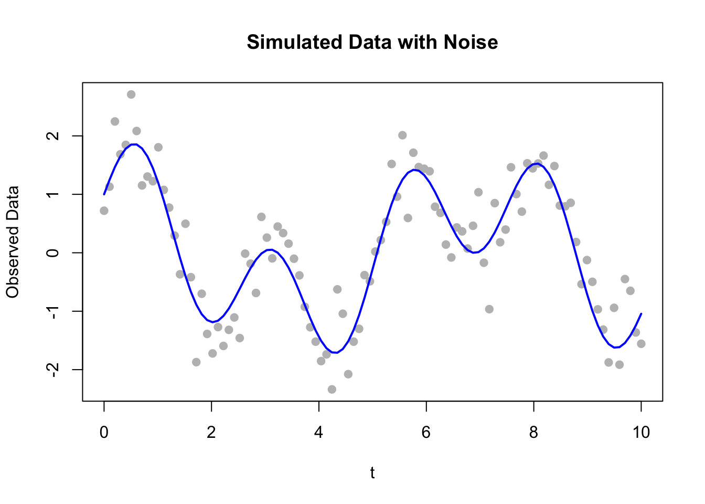
| Version | Author | Date |
|---|---|---|
| 3f52d52 | Ziang Zhang | 2025-07-14 |
Let’s try to fit a regression spline where the basis \(\{\phi_1(t),...,\phi_K(t)\}\) are \(K\) equally spaced cubic B-splines.
# Fit regression spline with K cubic B-splines
fit_spline <- function(data, K) {
# Create B-spline basis
basis <- create.bspline.basis(rangeval = range(data$t),
nbasis = K,
norder = 4)
# Evaluate basis at observed t to get design matrix
Phi <- eval.basis(data$t, basis)
# Solve least squares
coef <- solve(t(Phi) %*% Phi, t(Phi) %*% data$y)
# Compute fitted values at observed t
fitted_values <- as.vector(Phi %*% coef)
return(fitted_values)
}
spline_10_mod <- fit_spline(data_sim, K = 10)
plot(data_sim$t, data_sim$y, pch = 19, col = "grey",
ylab = "Observed Data", xlab = "t",
main = "Regression Spline with K=10")
lines(data_sim$t, spline_10_mod, col = "red", lwd = 2)
lines(data_sim$t, x_fun(data_sim$t), col = "blue", lwd = 2)
legend("topright", legend = c("Observed Data", "Fitted Spline", "True Function"),
col = c("grey", "red", "blue"), pch = c(19, NA, NA), lty = c(NA, 1, 1), lwd = 2)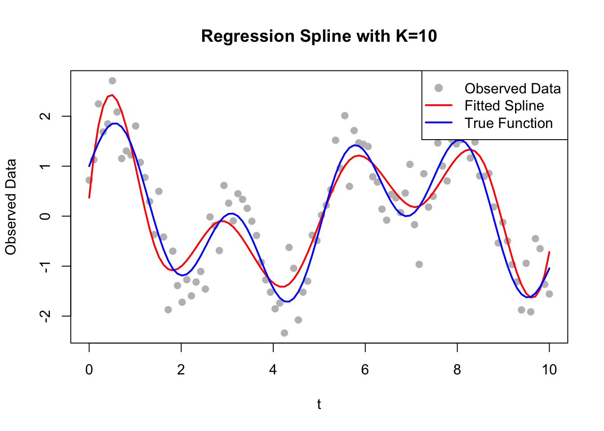
| Version | Author | Date |
|---|---|---|
| 3f52d52 | Ziang Zhang | 2025-07-14 |
What if we increase the number of basis functions \(K\) to 50?
spline_50_mod <- fit_spline(data_sim, K = 50)
plot(data_sim$t, data_sim$y, pch = 19, col = "grey",
ylab = "Observed Data", xlab = "t",
main = "Regression Spline with K=50")
lines(data_sim$t, spline_50_mod, col = "red", lwd = 2)
lines(data_sim$t, x_fun(data_sim$t), col = "blue", lwd = 2)
legend("topright", legend = c("Observed Data", "Fitted Spline", "True Function"),
col = c("grey", "red", "blue"), pch = c(19, NA, NA), lty = c(NA, 1, 1), lwd = 2)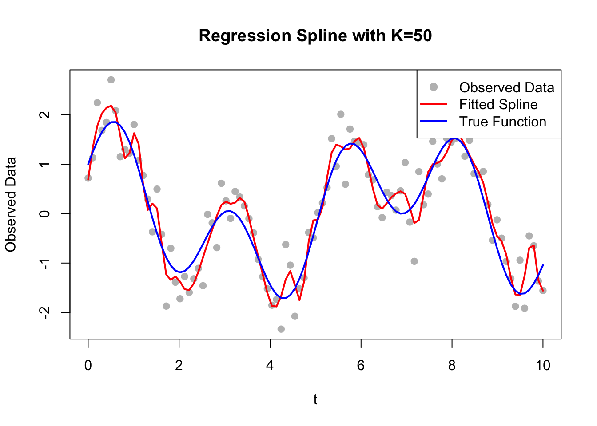
| Version | Author | Date |
|---|---|---|
| 3f52d52 | Ziang Zhang | 2025-07-14 |
What if we decrease the number of basis functions \(K\) to 5?
spline_5_mod <- fit_spline(data_sim, K = 5)
plot(data_sim$t, data_sim$y, pch = 19, col = "grey",
ylab = "Observed Data", xlab = "t",
main = "Regression Spline with K=5")
lines(data_sim$t, spline_5_mod, col = "red", lwd = 2)
lines(data_sim$t, x_fun(data_sim$t), col = "blue", lwd = 2)
legend("topright", legend = c("Observed Data", "Fitted Spline", "True Function"),
col = c("grey", "red", "blue"), pch = c(19, NA, NA), lty = c(NA, 1, 1), lwd = 2)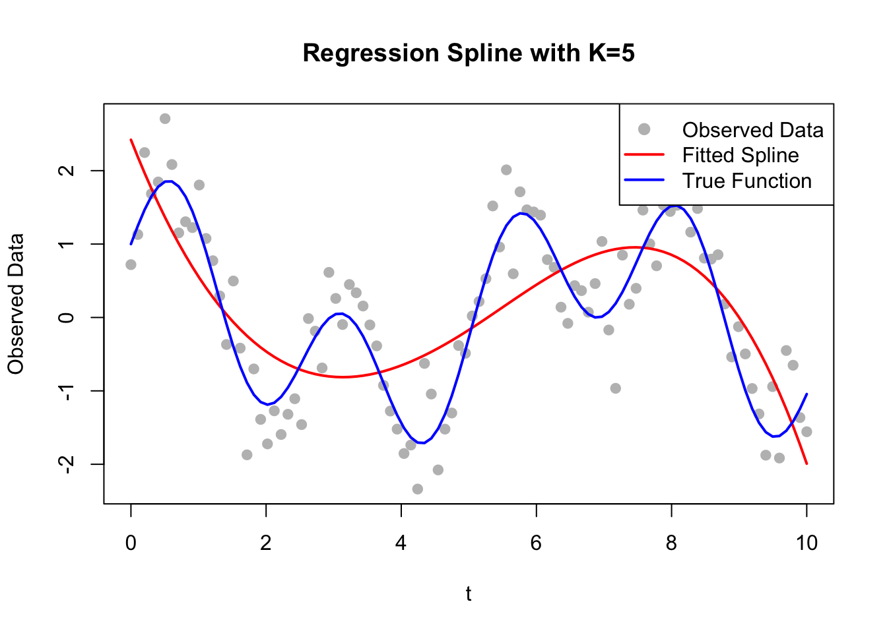
| Version | Author | Date |
|---|---|---|
| 3f52d52 | Ziang Zhang | 2025-07-14 |
Based on the fitted result, it appears that \(K = 10\) is a good balance between bias and variance, while \(K = 50\) overfits the data and \(K = 5\) under fits the data.
Let’s quantify the empirical MSE of each model:
mse <- function(fitted, true, data) {
mean((fitted - true(data$t))^2)
}
compute_mse <- function(K_vector, x_fun, data) {
sapply(K_vector, function(K) {
fitted <- fit_spline(data, K)
mse(fitted, x_fun, data)
})
}
K_vector <- seq(5, 50, by = 1)
MSE_vector <- compute_mse(K_vector, x_fun, data_sim)
plot(K_vector, MSE_vector, type = "b", pch = 19, col = "blue",
xlab = "Number of Basis Functions (K)",
ylab = "Empirical MSE",
main = "Empirical MSE vs Number of Basis Functions")
abline(v = min(K_vector[MSE_vector == min(MSE_vector)]), col = "red", lty = 2)
abline(h = min(MSE_vector), col = "green", lty = 2)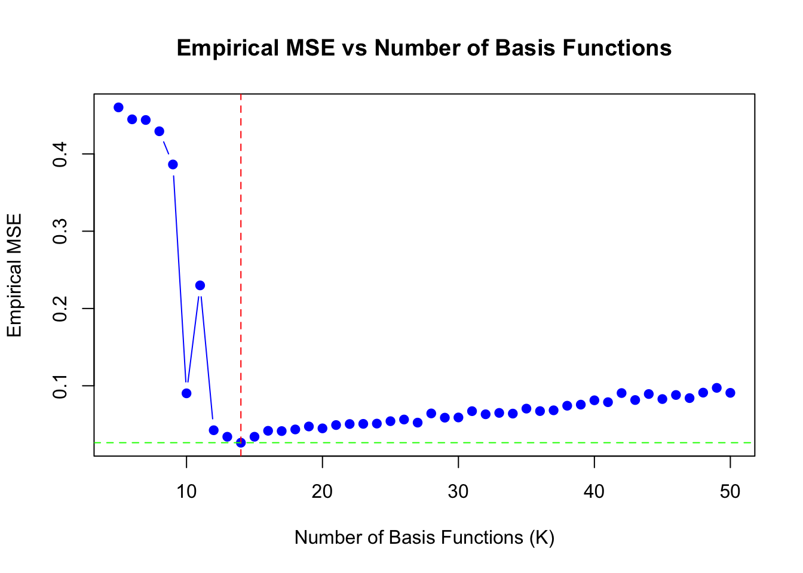
| Version | Author | Date |
|---|---|---|
| 3f52d52 | Ziang Zhang | 2025-07-14 |
Through Monte Carlo simulation, we can also visualize the bias-variance trade-off by plotting the bias and variance separately.
# Monte Carlo simulation to decompose Bias^2 and Variance
bias_variance_decomposition <- function(K_vector, x_fun, n_sim, data_n, sigma, t_grid) {
bias_mat <- matrix(0, nrow = length(K_vector), ncol = length(t_grid))
var_mat <- matrix(0, nrow = length(K_vector), ncol = length(t_grid))
mse_mat <- matrix(0, nrow = length(K_vector), ncol = length(t_grid))
for (k_idx in seq_along(K_vector)) {
K <- K_vector[k_idx]
fits <- matrix(0, nrow = n_sim, ncol = length(t_grid))
for (sim in 1:n_sim) {
# Simulate new data
data_sim <- simulate_data(n = data_n, sigma = sigma, seed = sim)
# Fit spline on training data
basis <- create.bspline.basis(rangeval = range(data_sim$t),
nbasis = K,
norder = 4)
Phi <- eval.basis(data_sim$t, basis)
coef <- solve(t(Phi) %*% Phi, t(Phi) %*% data_sim$y)
# Predict on grid
Phi_grid <- eval.basis(t_grid, basis)
fits[sim, ] <- as.vector(Phi_grid %*% coef)
}
# True function on grid
true_vals <- x_fun(t_grid)
# Bias^2
avg_fit <- colMeans(fits)
bias2 <- (avg_fit - true_vals)^2
# Variance
var_vals <- apply(fits, 2, var)
# MSE
mse_vals <- bias2 + var_vals
# Store
bias_mat[k_idx, ] <- bias2
var_mat[k_idx, ] <- var_vals
mse_mat[k_idx, ] <- mse_vals
}
return(list(bias2 = bias_mat, var = var_mat, mse = mse_mat))
}
# Define simulation parameters
K_vector <- seq(5, 50, by = 1)
n_sim <- 50
data_n <- 100
sigma <- 0.5
t_grid <- seq(0, 10, length.out = 200)
# Run simulation
set.seed(123)
decomp_result <- bias_variance_decomposition(K_vector, x_fun, n_sim, data_n, sigma, t_grid)
# Aggregate over grid by averaging
avg_bias2 <- rowMeans(decomp_result$bias2)
avg_var <- rowMeans(decomp_result$var)
avg_mse <- rowMeans(decomp_result$mse)
# Set up plot
plot(K_vector, avg_mse, type = "n",
ylim = c(0, max(avg_mse, avg_bias2, avg_var) * 1.05),
ylab = "Error", xlab = "Number of Basis Functions (K)",
main = "Bias-Variance Trade-off")
# Add shaded areas for Bias^2 and Variance and MSE
polygon(c(K_vector, rev(K_vector)),
c(avg_bias2, rep(0, length(avg_bias2))),
col = adjustcolor("red", alpha.f = 0.2), border = NA)
polygon(c(K_vector, rev(K_vector)),
c(avg_var, rep(0, length(avg_var))),
col = adjustcolor("blue", alpha.f = 0.2), border = NA)
polygon(c(K_vector, rev(K_vector)),
c(avg_mse, rep(0, length(avg_mse))),
col = adjustcolor("black", alpha.f = 0.2), border = NA)
# Add lines on top
lines(K_vector, avg_mse, col = "black", lwd = 2, lty = 1)
lines(K_vector, avg_bias2, col = "red", lwd = 2, lty = 2)
lines(K_vector, avg_var, col = "blue", lwd = 2, lty = 3)
# Add legend
legend("topright",
legend = c("MSE", "Bias^2", "Variance"),
col = c("black", "red", "blue"),
lwd = 2,
lty = c(1, 2, 3),
bg = "white")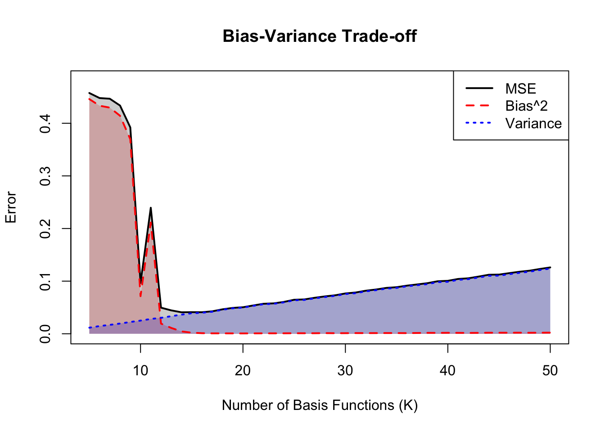
| Version | Author | Date |
|---|---|---|
| 3f52d52 | Ziang Zhang | 2025-07-14 |
In this chapter, the author also discusses details regarding the uncertainty quantification of the smoother.
For linear smoothers, the derivation of the sampling variance of the fitted values is straightforward:
\[ \operatorname{Var}[\hat{\boldsymbol{x}}(\boldsymbol{t})] = \operatorname{Var}[\mathbf{S}\boldsymbol{y}] = \mathbf{S}\mathbf{\Sigma}_{\boldsymbol{y}}\mathbf{S}'. \]
Under the standard OLS assumption of homoskedastic errors:
\[ \mathbf{\Sigma}_{\boldsymbol{y}} = \sigma^2 \mathbf{I}_{n \times n}, \]
we have:
\[ \operatorname{Var}[\hat{\boldsymbol{x}}(\boldsymbol{t})] = \sigma^2 \mathbf{S}\mathbf{S}'. \]
Plugging in the OLS definition of the smoothing matrix:
\[ \mathbf{S} = \boldsymbol{\Phi}(\boldsymbol{\Phi}'\boldsymbol{\Phi})^{-1}\boldsymbol{\Phi}', \]
we can simplify:
\[ \begin{aligned} \operatorname{Var}[\hat{\boldsymbol{x}}(\boldsymbol{t})] &= \sigma^2 \mathbf{S}\mathbf{S}' \\ &= \sigma^2 \boldsymbol{\Phi}(\boldsymbol{\Phi}'\boldsymbol{\Phi})^{-1}\boldsymbol{\Phi}' \boldsymbol{\Phi}(\boldsymbol{\Phi}'\boldsymbol{\Phi})^{-1}\boldsymbol{\Phi}' \\ &= \sigma^2 \boldsymbol{\Phi}(\boldsymbol{\Phi}'\boldsymbol{\Phi})^{-1}\boldsymbol{\Phi}' \\ &= \sigma^2 \mathbf{S}. \end{aligned} \]
This final result shows that, under homoskedastic errors, the variance of the smoother at the observed points is proportional to the smoother matrix itself.
Note: This is another way to understand why the effective degrees of freedom (EDF) is defined as the trace of the smoothing matrix \(\mathbf{S}\). The trace gives the total variance of the fitted values, which is a measure of the flexibility of the smoother. For the same reason, some times the EDF is defined as \(EDF = tr\{\mathbf{S}\mathbf{S}'\}\).
When the error variance \(\sigma^2\) is unknown, we can estimate it using the residuals: \[ s^2 = \frac{1}{n - K} \sum_{i}^n (y_i - \hat{y}_i) ^2. \]
Using the estimated variance, a typical \((1-\alpha)\) level pointwise confidence interval for the fitted value at a point \(t_i\) is given by:
\[ \hat{x}(t_i) \pm z_{\alpha/2} \sqrt{\operatorname{Var}[\hat{x}(t_i)]}. \]
However, the author notes the following important caveats regarding this interval:
Interpretation: This interval should be interpreted as a pointwise confidence interval, meaning it quantifies the uncertainty at each individual point \(t_i\). For global coverage across the entire domain, more sophisticated approaches such as simultaneous confidence bands are needed.
Ignored uncertainty: The interval does not account for the uncertainty in certain model choices or hyperparameters of the smoother, such as the number of basis functions (\(K\)) or the estimated standard deviation of the error term (\(\sigma\)).
Model misspecification: The interval will not be well-calibrated if the model assumptions are violated. In particular, if the fitted smoother is not flexible enough to capture the underlying structure of the data in certain regions, the true uncertainty may be underestimated.
For the above dataset, let’s first fit the smoother (using B-splines) and compute the smoothing matrix:
# Function to obtain the B-spline design matrix
obtain_design <- function(data, K) {
basis <- create.bspline.basis(rangeval = range(data$t), nbasis = K, norder = 4)
Phi <- eval.basis(data$t, basis)
return(Phi)
}
# Create design matrix and smoothing matrix
Phi <- obtain_design(data_sim, K = 20)
S <- Phi %*% solve(t(Phi) %*% Phi) %*% t(Phi)
# Compute fitted values
yhat <- as.vector(S %*% data_sim$y)
# Estimate residual standard deviation (sigma)
s <- sqrt(sum((data_sim$y - yhat)^2) / (nrow(data_sim) - sum(diag(S))))
# Estimate pointwise variance of the fitted values
var_yhat <- s^2 * diag(S)Let’s visualize the fitted values along with the pointwise confidence intervals:
plot(data_sim$t, data_sim$y, pch = 19, col = "grey",
ylab = "Observed Data", xlab = "t",
main = "Fitted Spline with Pointwise Confidence Intervals")
# Add fitted curve
lines(data_sim$t, yhat, col = "red", lwd = 2)
# Add pointwise 95% confidence intervals as shaded band
polygon(c(data_sim$t, rev(data_sim$t)),
c(yhat + qnorm(0.975) * sqrt(var_yhat),
rev(yhat - qnorm(0.975) * sqrt(var_yhat))),
col = adjustcolor("red", alpha.f = 0.2), border = NA)
# Add true function
lines(data_sim$t, x_fun(data_sim$t), col = "blue", lwd = 2, lty = 2)
legend("topright",
legend = c("Observed Data", "Fitted Spline", "True Function", "Pointwise CI"),
col = c("grey", "red", "blue", adjustcolor("red", alpha.f = 0.2)),
pch = c(19, NA, NA, NA),
lwd = c(NA, 2, 2, NA),
lty = c(NA, 1, 2, 1),
bg = "white")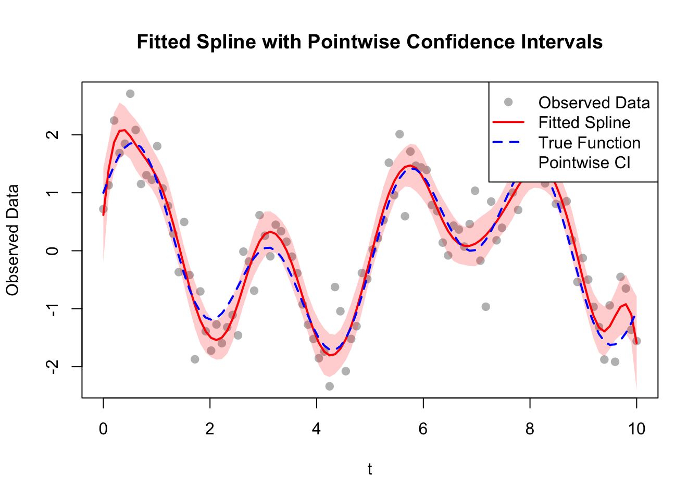
| Version | Author | Date |
|---|---|---|
| 3f52d52 | Ziang Zhang | 2025-07-14 |
What is the pointwise coverage of the interval averaged over the entire vector?
coverage <- mean((x_fun(data_sim$t) >= (yhat - qnorm(0.975) * sqrt(var_yhat))) &
(x_fun(data_sim$t) <= (yhat + qnorm(0.975) * sqrt(var_yhat))))
coverage[1] 0.95Let’s compute the pointwise coverage for different values of \(K\):
# Function to compute pointwise coverage for given K
compute_pointwise_coverage <- function(data, K) {
# Design matrix and smoother matrix
Phi <- obtain_design(data, K)
S <- Phi %*% solve(t(Phi) %*% Phi) %*% t(Phi)
# Fitted values
yhat <- as.vector(S %*% data$y)
# Estimate sigma
s <- sqrt(sum((data$y - yhat)^2) / (nrow(data) - sum(diag(S))))
# Estimated variance of fitted values
var_yhat <- s^2 * diag(S)
# True function
true_vals <- x_fun(data$t)
# Compute coverage
lower <- yhat - qnorm(0.975) * sqrt(var_yhat)
upper <- yhat + qnorm(0.975) * sqrt(var_yhat)
coverage <- mean(true_vals >= lower & true_vals <= upper)
return(coverage)
}
# Vector of K values to test
K_values <- seq(5, 50, by = 5)
# Compute coverage for each K
coverage_values <- sapply(K_values, function(K) compute_pointwise_coverage(data_sim, K))
# Plot
plot(K_values, coverage_values, type = "b", pch = 19, col = "blue",
ylim = c(0, 1),
xlab = "Number of Basis Functions (K)",
ylab = "Pointwise Coverage",
main = "Pointwise Coverage vs Number of Basis Functions")
abline(h = 0.95, col = "red", lty = 2)
legend("bottomright", legend = c("Empirical Coverage", "Nominal 95%"),
col = c("blue", "red"), lty = c(1, 2), pch = c(19, NA), lwd = 2)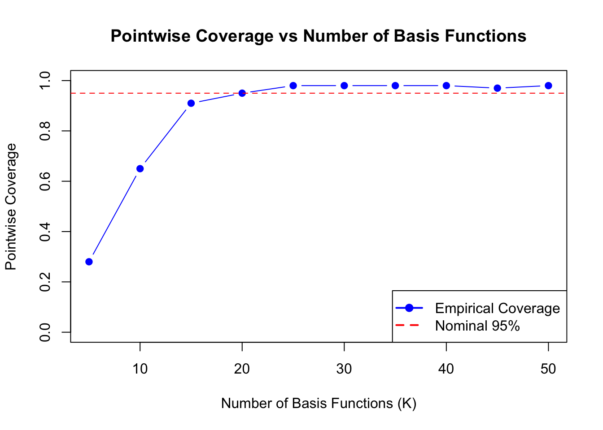
| Version | Author | Date |
|---|---|---|
| 3f52d52 | Ziang Zhang | 2025-07-14 |
We could also double check how does the estimated error variance changes with \(K\), which was suggested by the author as a way to pick the number of basis functions \(K\).
# Function to estimate residual variance for a given K
estimate_sigma2 <- function(data, K) {
# Design matrix and smoothing matrix
Phi <- obtain_design(data, K)
S <- Phi %*% solve(t(Phi) %*% Phi) %*% t(Phi)
# Fitted values
yhat <- as.vector(S %*% data$y)
# Degrees of freedom = trace(S)
df <- sum(diag(S))
# Residual sum of squares
rss <- sum((data$y - yhat)^2)
# Estimated sigma^2
sigma2_hat <- rss / (nrow(data) - df)
return(sigma2_hat)
}
# Vector of K values to test
K_values <- seq(5, 50, by = 5)
# Compute estimated sigma^2 for each K
sigma2_values <- sapply(K_values, function(K) estimate_sigma2(data_sim, K))
# Plot
plot(K_values, sigma2_values, type = "b", pch = 19, col = "darkgreen",
xlab = "Number of Basis Functions (K)",
ylab = "Estimated Error Variance",
main = "Estimated Error Variance vs Number of Basis Functions")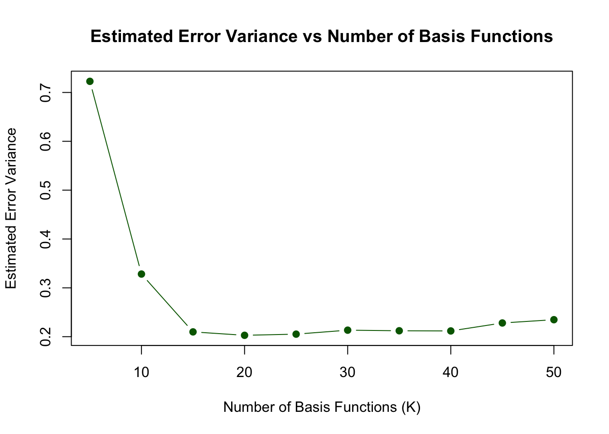
| Version | Author | Date |
|---|---|---|
| 3f52d52 | Ziang Zhang | 2025-07-14 |
Based on the figure, it seems like \(K = 20\) is indeed a good choice to balance the bias-variance trade-off. After \(K = 20\), the estimated error no longer seems to decrease significantly, which suggests that the model is not improving much with more complexity.
Finally, the author closed the chapter with a discussion on localized least squares.
The idea of smoothing is that the estimate of \(\hat{x}(t_i)\) should not depend solely on the observed data at \(t_i\) (e.g., \(y_i\)), but should also take into account the nearby observations.
If we use a point-interpolation smoother, we only use the observation at \(t_i\) to estimate \(\hat{x}(t_i)\), resulting in a highly non-smooth estimate.
If we use the sample mean smoother, we use all observations equally to estimate \(\hat{x}(t_i)\), resulting in an overly smooth estimate that may fail to capture the local structure of the data.
An ideal linear smoother should assign weights \(S_j(t_i)\) such that:
\[ \hat{x}(t_i) = \sum_{j=1}^n S_j(t_i) y_j, \]
where \(S_j(t_i)\) is a weight that depends on the distance between \(t_i\) and \(t_j\).
The kernel smoother is a compromise between these
two extremes.
It uses a kernel function \(\text{Kern}(\cdot)\) to weight the
contributions of nearby observations when estimating \(\hat{x}(t_i)\). The kernel function is a
non-negative function with most of its mass concentrated around zero,
and it gradually decays to zero as the distance increases.
Typically, the kernel function is symmetric, meaning \(\text{Kern}(t) = \text{Kern}(-t)\).
It is also usually paired with a bandwidth parameter
\(h\) that controls the width of the
kernel and determines how much weight is given to observations at
different distances.
Using kernel functions, we could construct more flexible linear smoothers that adapt to the local structure of the data. For example, the Nadaraya–Watson kernel smoother is defined as: \[ S_j(t_i) = \frac{\text{Kern}\left(\frac{t_i - t_j}{h}\right)}{\sum_{k=1}^n \text{Kern}\left(\frac{t_i - t_k}{h}\right)}. \]
Here are some illustrations of applying NW kernel smoother:
# Define a function to generate the smoother matrix S
generate_nw_smoother_matrix <- function(t_obs, h, kernel_func) {
n <- length(t_obs)
S <- matrix(0, nrow = n, ncol = n)
for (i in 1:n) {
weights <- kernel_func((t_obs[i] - t_obs) / h)
weights <- weights / sum(weights)
S[i, ] <- weights
}
return(S)
}First, consider an example with a Gaussian kernel with bandwidth \(h = 0.2\).
# Gaussian kernel
gaussian_kernel <- function(u) dnorm(u)
# Create smoother matrix with Gaussian kernel and h = 0.2
S_gaussian <- generate_nw_smoother_matrix(data_sim$t, h = 0.2, kernel_func = gaussian_kernel)
# Compute fitted values
yhat_gaussian <- as.vector(S_gaussian %*% data_sim$y)
plot(data_sim$t, data_sim$y, pch = 19, col = "grey",
ylab = "Observed Data", xlab = "t",
main = "Nadaraya-Watson Kernel Smoother (Gaussian Kernel, h=0.2)")
lines(data_sim$t, yhat_gaussian, col = "red", lwd = 2)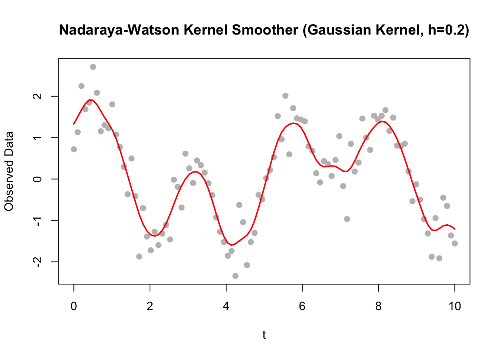
| Version | Author | Date |
|---|---|---|
| 3f52d52 | Ziang Zhang | 2025-07-14 |
Let’s take a look at the EDF of this smoother:
sum(diag(S_gaussian))[1] 20.59767Let’s also consider the bandwidth of \(h = 0.5\) and \(h = 0.1\):
S_gaussian_h05 <- generate_nw_smoother_matrix(data_sim$t, h = 0.5, kernel_func = gaussian_kernel)
yhat_gaussian_h05 <- as.vector(S_gaussian_h05 %*% data_sim$y)
S_gaussian_h01 <- generate_nw_smoother_matrix(data_sim$t, h = 0.1, kernel_func = gaussian_kernel)
yhat_gaussian_h01 <- as.vector(S_gaussian_h01 %*% data_sim$y)
plot(data_sim$t, data_sim$y, pch = 19, col = "grey",
ylab = "Observed Data", xlab = "t",
main = "Nadaraya-Watson Kernel Smoother (Gaussian Kernel)")
lines(data_sim$t, yhat_gaussian_h05, col = "red", lwd = 2, lty = 1)
lines(data_sim$t, yhat_gaussian_h01, col = "blue", lwd = 2, lty = 2)
lines(data_sim$t, yhat_gaussian, col = "green", lwd = 3, lty = 3)
lines(data_sim$t, x_fun(data_sim$t), col = "black", lwd = 2, lty = 4)
legend("topright",
legend = c("Observed Data", "h=0.5", "h=0.1", "h=0.2", "True Function"),
col = c("grey", "red", "blue", "green", "black"),
pch = c(19, NA, NA, NA, NA),
lwd = c(NA, 2, 2, 2, 2),
lty = c(NA, 1, 2, 3, 4),
bg = "white")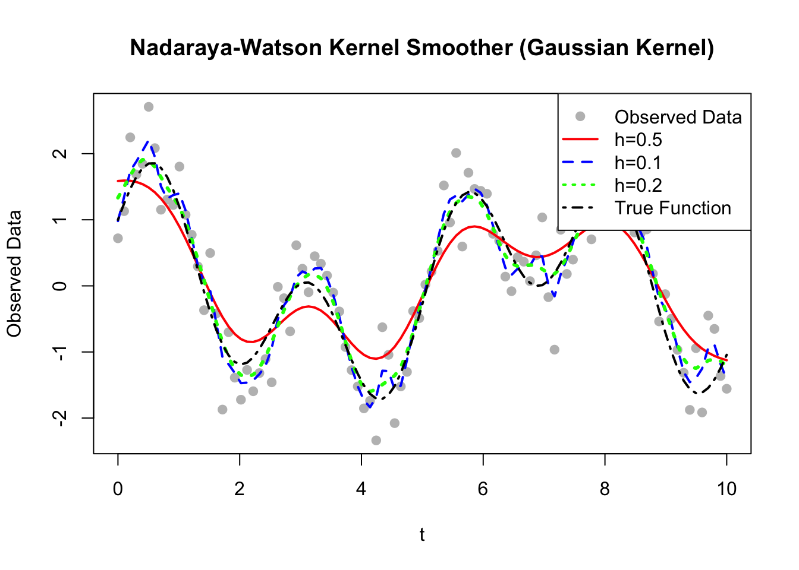
| Version | Author | Date |
|---|---|---|
| 3f52d52 | Ziang Zhang | 2025-07-14 |
Let’s compare their EDF:
edf_gaussian_h05 <- sum(diag(S_gaussian_h05))
edf_gaussian_h01 <- sum(diag(S_gaussian_h01))
edf_gaussian <- sum(diag(S_gaussian))
plot(c(0.1, 0.2, 0.5), c(edf_gaussian_h01, edf_gaussian, edf_gaussian_h05),
type = "b", pch = 19, col = "blue",
xlab = "Bandwidth (h)",
ylab = "Effective Degrees of Freedom (EDF)",
main = "EDF of Nadaraya-Watson Kernel Smoother")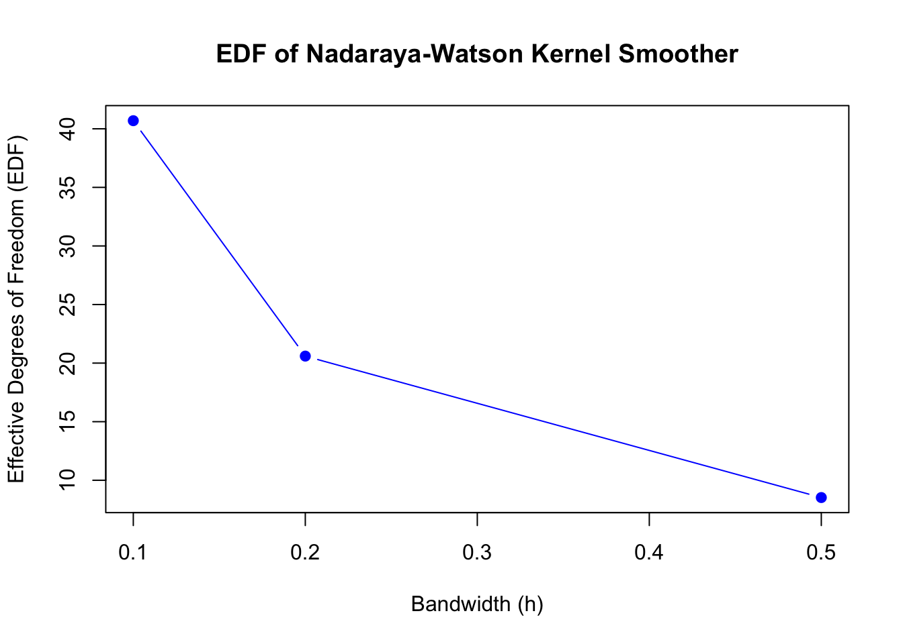
| Version | Author | Date |
|---|---|---|
| 3f52d52 | Ziang Zhang | 2025-07-14 |
What if we change the kernel function to a uniform kernel?
h_vector <- c(0.1, 0.2, 0.5)
uniform_kernel <- function(u) {
ifelse(abs(u) <= 1, 0.5, 0)
}
S_uniform <- lapply(h_vector, function(h) generate_nw_smoother_matrix(data_sim$t, h, uniform_kernel))
yhat_uniform <- lapply(S_uniform, function(S) as.vector(S %*% data_sim$y))
plot(data_sim$t, data_sim$y, pch = 19, col = "grey",
ylab = "Observed Data", xlab = "t",
main = "Nadaraya-Watson Kernel Smoother (Uniform Kernel)")
for (i in seq_along(h_vector)) {
lines(data_sim$t, yhat_uniform[[i]], col = i + 1, lwd = 3, lty = i)
}
legend("topright",
legend = c("Observed Data", paste0("h=", h_vector)),
col = c("grey", 2:4),
pch = c(19, NA, NA, NA),
lwd = c(NA, 2, 2, 2),
lty = 1:length(h_vector),
bg = "white")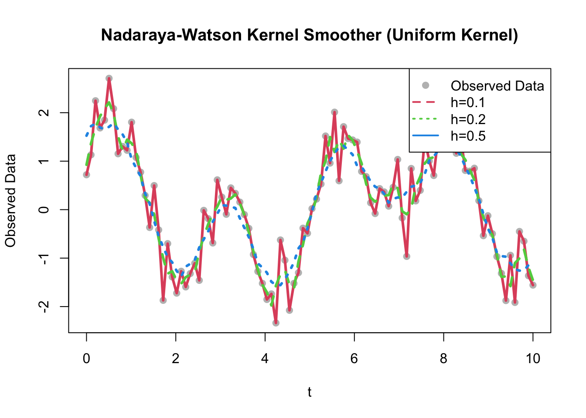
| Version | Author | Date |
|---|---|---|
| 3f52d52 | Ziang Zhang | 2025-07-14 |
Let’s compare their EDF:
edf_uniform <- sapply(S_uniform, function(S) sum(diag(S)))
plot(h_vector, edf_uniform,
type = "b", pch = 19, col = "blue",
xlab = "Bandwidth (h)",
ylab = "Effective Degrees of Freedom (EDF)",
main = "EDF of Nadaraya-Watson Kernel Smoother (Uniform Kernel)")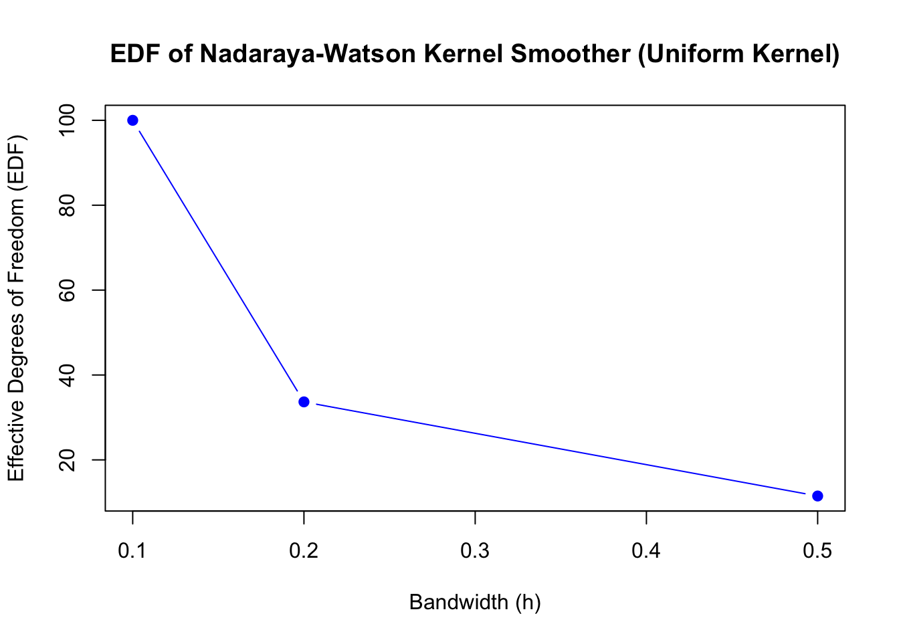
| Version | Author | Date |
|---|---|---|
| 3f52d52 | Ziang Zhang | 2025-07-14 |
Finally, the author established the connection between kernel smoothing and local polynomial smoothing.
Note that in the original OLS problem, the regression coefficients \(\boldsymbol{c}\) are fitted globally over the entire domain. In contrast, using the kernel function, we could define a local cost function at each specific point \(t\), which wieghts the contributions of nearby observations more heavily than distant ones.
For example, at a given point \(t\), we could define the local cost function as: \[ l_t(\boldsymbol{c}) = \sum_{j=1}^n \text{Kern}\left(\frac{t - t_j}{h}\right) (y_j - \boldsymbol{\phi}(t_j)'\boldsymbol{c})^2, \] where \(\boldsymbol{\phi}(t_j)\) is the vector of basis functions evaluated at \(t_j\).
The estimated coefficients \(\hat{\boldsymbol{c}}(t)\) will have the form of the WLS estimate: \[ \hat{\boldsymbol{c}}(t) = [\mathbf{\Phi}'\mathbf{W}(t)\mathbf{\Phi}]^{-1} \mathbf{\Phi}'\mathbf{W}(t)\boldsymbol{y}, \] where \(\mathbf{W}(t)\) has diagonal elements being \[ \mathbf{W}_{ii}(t) = \text{Kern}\left(\frac{t - t_i}{h}\right). \]
Therefore, the smoothing matrix \(\mathbf{S}\) can be expressed as:
\[ \mathbf{S} = \begin{bmatrix} \boldsymbol{\phi}(t_1)'[\mathbf{\Phi}'\mathbf{W}(t_1)\mathbf{\Phi}]^{-1}\mathbf{\Phi}'\mathbf{W}(t_1) \\ \boldsymbol{\phi}(t_2)'[\mathbf{\Phi}'\mathbf{W}(t_2)\mathbf{\Phi}]^{-1}\mathbf{\Phi}'\mathbf{W}(t_2) \\ \vdots \\ \boldsymbol{\phi}(t_n)'[\mathbf{\Phi}'\mathbf{W}(t_n)\mathbf{\Phi}]^{-1}\mathbf{\Phi}'\mathbf{W}(t_n) \end{bmatrix}, \] such that
\[ \hat{\boldsymbol{y}} = \begin{bmatrix} \boldsymbol{\phi}(t_1)' \hat{\boldsymbol{c}}(t_1) \\ \boldsymbol{\phi}(t_2)' \hat{\boldsymbol{c}}(t_2) \\ \vdots \\ \boldsymbol{\phi}(t_n)' \hat{\boldsymbol{c}}(t_n) \end{bmatrix} = \mathbf{S}\boldsymbol{y}. \]
Here we illustrate the idea of local polynomial smoothing using the
built-in loess function in R.
By default, loess() fits a local quadratic
smoother (degree = 2) with a tri-cube
kernel.
We can adjust the bandwidth through the span parameter,
and also change the degree of the local polynomial using the
degree parameter.
# Fit LOESS model with typical span
loess_fit <- loess(y ~ t, data = data_sim, span = 0.1, degree = 2)
summary(loess_fit)Call:
loess(formula = y ~ t, data = data_sim, span = 0.1, degree = 2)
Number of Observations: 100
Equivalent Number of Parameters: 28.59
Residual Standard Error: 0.4605
Trace of smoother matrix: 31.57 (exact)
Control settings:
span : 0.1
degree : 2
family : gaussian
surface : interpolate cell = 0.2
normalize: TRUE
parametric: FALSE
drop.square: FALSE Take a look at its fitted curve:
# Get fitted values on a dense grid
t_grid <- seq(0, 20, length.out = 200)
yhat_loess <- predict(loess_fit, newdata = data.frame(t = t_grid))
# Plot
plot(data_sim$t, data_sim$y, pch = 19, col = "grey",
ylab = "Observed Data", xlab = "t",
main = "LOESS Smoothing")
lines(t_grid, yhat_loess, col = "red", lwd = 2)
lines(t_grid, x_fun(t_grid), col = "blue", lwd = 2, lty = 2)
legend("topright",
legend = c("Observed Data", "LOESS Fit", "True Function"),
col = c("grey", "red", "blue"),
pch = c(19, NA, NA),
lty = c(NA, 1, 2),
lwd = 2,
bg = "white")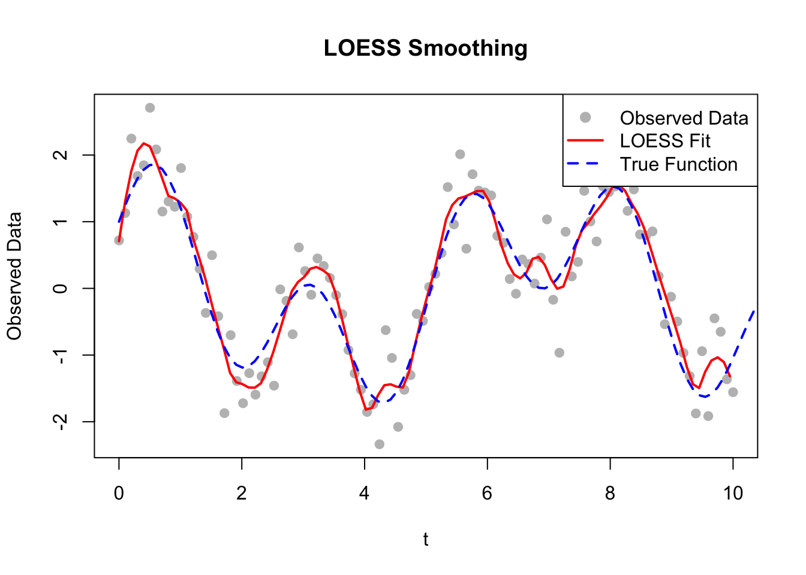
| Version | Author | Date |
|---|---|---|
| 3f52d52 | Ziang Zhang | 2025-07-14 |
sessionInfo()R version 4.3.1 (2023-06-16)
Platform: aarch64-apple-darwin20 (64-bit)
Running under: macOS Monterey 12.7.4
Matrix products: default
BLAS: /Library/Frameworks/R.framework/Versions/4.3-arm64/Resources/lib/libRblas.0.dylib
LAPACK: /Library/Frameworks/R.framework/Versions/4.3-arm64/Resources/lib/libRlapack.dylib; LAPACK version 3.11.0
locale:
[1] en_US.UTF-8/en_US.UTF-8/en_US.UTF-8/C/en_US.UTF-8/en_US.UTF-8
time zone: America/Chicago
tzcode source: internal
attached base packages:
[1] splines stats graphics grDevices utils datasets methods
[8] base
other attached packages:
[1] fda_6.2.0 deSolve_1.40 fds_1.8 RCurl_1.98-1.16
[5] rainbow_3.8 pcaPP_2.0-5 MASS_7.3-60 workflowr_1.7.1
loaded via a namespace (and not attached):
[1] ks_1.14.3 sass_0.4.10 bitops_1.0-9 KernSmooth_2.23-24
[5] stringi_1.8.7 lattice_0.22-6 hdrcde_3.4 pracma_2.4.4
[9] digest_0.6.37 magrittr_2.0.3 evaluate_1.0.3 grid_4.3.1
[13] mvtnorm_1.3-1 fastmap_1.2.0 rprojroot_2.0.4 jsonlite_2.0.0
[17] Matrix_1.6-4 processx_3.8.6 whisker_0.4.1 mclust_6.1.1
[21] ps_1.9.1 promises_1.3.3 httr_1.4.7 jquerylib_0.1.4
[25] cli_3.6.5 rlang_1.1.6 cachem_1.1.0 yaml_2.3.10
[29] tools_4.3.1 colorspace_2.1-1 httpuv_1.6.16 vctrs_0.6.5
[33] R6_2.6.1 lifecycle_1.0.4 git2r_0.33.0 stringr_1.5.1
[37] fs_1.6.6 cluster_2.1.6 pkgconfig_2.0.3 callr_3.7.6
[41] pillar_1.10.2 bslib_0.9.0 later_1.4.2 glue_1.8.0
[45] Rcpp_1.0.14 xfun_0.52 tibble_3.2.1 rstudioapi_0.16.0
[49] knitr_1.50 htmltools_0.5.8.1 rmarkdown_2.28 compiler_4.3.1
[53] getPass_0.2-4